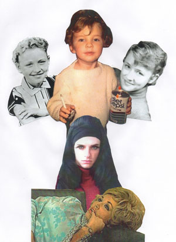

past performances |
|||
|
Nath Ann Carrera: I Don't Want To Throw Rice, I Want To Throw Rocks: The Early Southern Gothicism Of Dolly Parton! Nath Ann Carrera returns with a one-night only evening of early extreme sensationalistic story songs penned by Dolly Parton from 1967-1971! Class Conscious Incest! Teen Delinquent Anti-Authoritarian Murder! Mental Institution Imprisonment! Women's Lib! Anti-Marriage Retaliation! Outlaw Lovers! Stillborn Suicide! Children Bursting Into Flames While Their Parents Tell Dirty Jokes! And BEYOND! Described as a "heavenly" (New York Times), "gender-defiant" (Time Out New York), "glitter saint" (Village Voice), Nath Ann has had solo shows at La MaMa ("Death To The Patriarchal Rape Heads"), Joe's Pub, Wild Project, and the Afterglow Festival, WITCH CAMP with Amber Martin, performs with Justin Vivian Bond, and has sung at P.S. 122, The Kitchen, Abrons Arts Center, Le Poisson Rouge, City Winery, and MoMA PS1. "Wonderful, striking... essayistic songs about female revenge and politics" Hilton Als- The Paris Review |
 | ||
upcoming performances |
|||
 |
|||
| EVQ Film Festival 2018 August 20-25 |
|||
performance archives |
|||
| 2018 | 2017 | 2016 | 2015 |
| 2014 | 2013 | 2012 | 2011 |
| 2010 | 2009 | 2008 | 2007 |